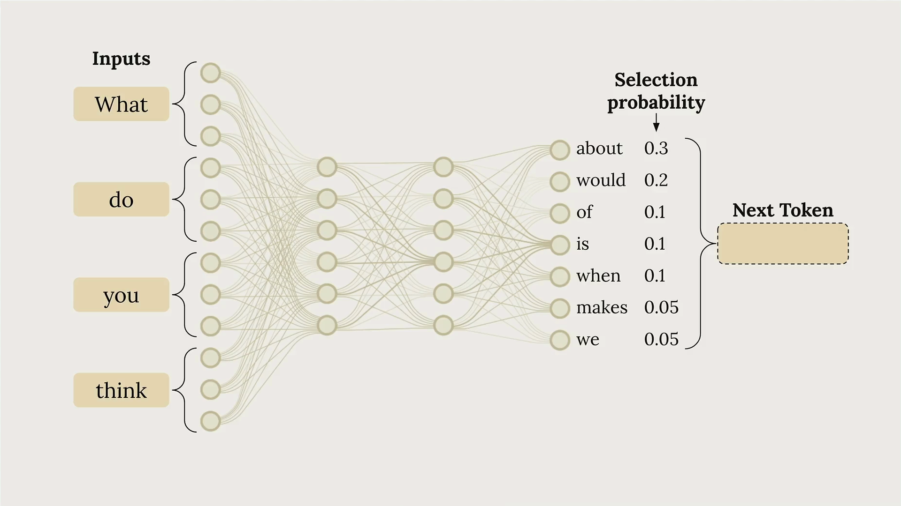
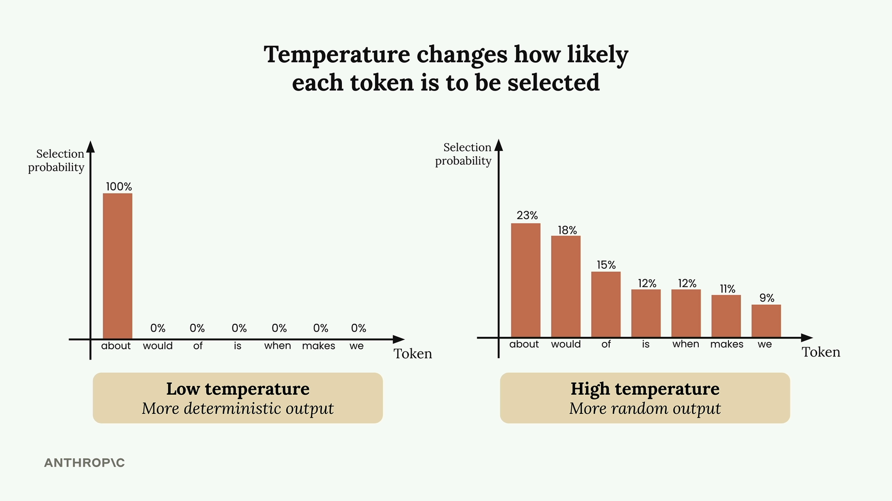
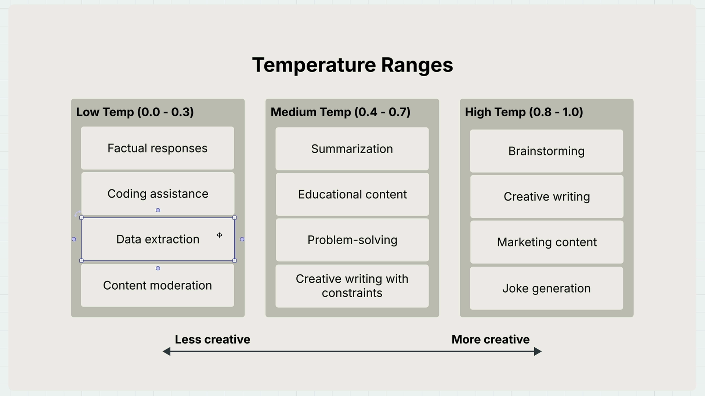

Temperature
Чему научитесь
Около 6 минут
К концу урока вы сможете:
- связать temperature с выбором следующего токена;
- выбрать диапазон под задачу;
- передать temperature в ту же функцию
chat.
Как выбирается следующее слово
Видео и схемы урока.
Смотреть урок на Skilljar TemperatureTemperature задаёт, насколько ответ предсказуемый или разнообразный. На промпте вроде «What do you think?» модель проходит три шага: режет вход на токены, считает вероятности следующих слов, выбирает токен по этим вероятностям.

В примере урока у «about» вероятность 30%, у «would» 20%, у «of» 10%. Выбранный токен дописывается, и процесс повторяется.

Что делает temperature
Это число от 0 до 1. Оно меняет те самые вероятности. Около 0 модель почти всегда берёт самый вероятный токен. Около 1 вероятность размазывается по остальным вариантам.


Какой диапазон под какую задачу
Низкая, 0.0–0.3
- фактические ответы;
- помощь с кодом;
- извлечение данных;
- модерация.
Средняя, 0.4–0.7
- пересказ;
- учебный текст;
- решение задач;
- творческий текст с ограничениями.
Высокая, 0.8–1.0
- мозговой штурм;
- художественный текст;
- маркетинговые формулировки;
- шутки.

Как добавить в chat
В параметры добавляют temperature. Значение по умолчанию в функции урока — 1.0.
def chat(messages, system=None, temperature=1.0):
params = {
"model": model,
"max_tokens": 1000,
"messages": messages,
"temperature": temperature
}
if system:
params["system"] = system
message = client.messages.create(**params)
return message.content[0].text
# Low temperature - more predictable answer = chat(messages, temperature=0.0) # High temperature - more creative answer = chat(messages, temperature=1.0)
Как это выглядит
Урок предлагает генерировать идеи фильмов. При 0.0 ответ часто один и тот же, в примере: «A time-traveling archaeologist must prevent ancient artifacts from being stolen.» При 1.0 варианты расходятся сильнее.
Temperature не гарантирует другой текст. Она меняет вероятность другого текста. Даже при высокой температуре ответы иногда совпадают.
- нужен устойчивый фактический ответ — низкая;
- нужен штурм — высокая;
- обычная задача — середина.
Дальше
Дальше ответ начинают показывать по кускам, не дожидаясь конца генерации.
Оригинал урока: Temperature.